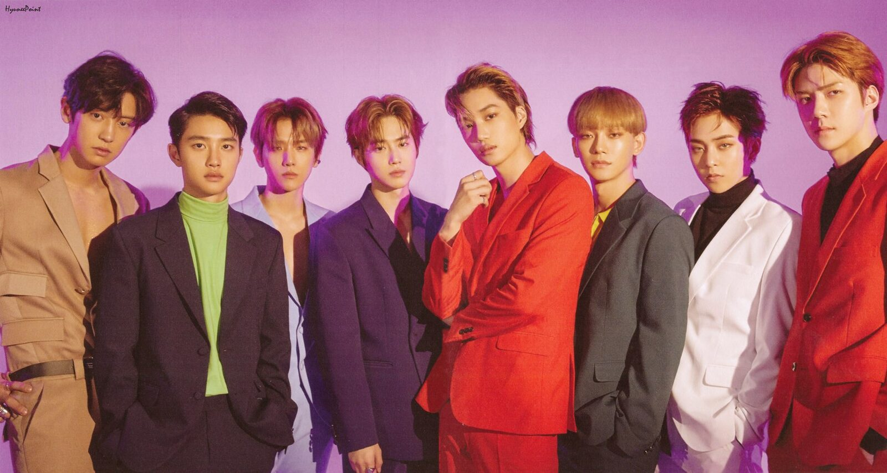

Exo (en hangul, 엑소; romanización revisada del coreano, Ekso; McCune-Reischauer, Ek'so; katakana: エクソ; estilizado como EXO) es una boy band surcoreana de K-pop. Formado por S.M. Entertainment en 2011, el grupo debutó en 2012 con doce integrantes separados en dos sub-grupos, EXO-K y EXO-M, interpretando música en coreano y mandarín.
A abril de 2019, está compuesto por nueve miembros: Xiumin, Suho, Lay, Baekhyun, Chen, Chanyeol, D.O., Kai, y Sehun. Su formación original también incluía a Luhan, Kris y Tao, que salieron luego de demandar a la S.M. Entertainment. El fan club del grupo es EXO-L, que viene de EXO-Love.
La L significa el amor que sienten los fanáticos de EXO, además de ser la letra que está entre la K y la M.2.
Su debut oficial fue el 8 de abril de 2012 con el lanzamiento del sencillo «Mama» del EP homónimo.3 En 2013, saltó a la fama al lanzar su primer álbum de estudio, XOXO, y el exitoso sencillo «Growl», vendiendo más de dos millones de copias digitales de la canción solo en Corea del Sur.
Pocos meses después del lanzamiento de «Growl», XOXO acumuló un millón de copias vendidas, haciendo que EXO se convirtiera en el primer artista de K-pop en doce años en superar la marca. Los álbumes de estudio posteriores, EXODUS (2015), EX'ACT (2016) y The War (2017), continuaron siendo exitosos, obteniendo más de un millón de copias vendidas.
Descrito como «la boy band más grande del mundo» por Dazed y Vogue, EXO llegó a ser el artista con el mayor número daesangs (en hangul, 대상) de la historia en su momento.
 Blackpink (en hangul, 블랙 핑크; estilizado como BLΛƆKPIИK o BLACKPINK) es un grupo femenino formado por YG Entertainment. Está integrado por cuatro miembros: Jisoo, Jennie, Rosé y Lisa. El grupo debutó el 8 de agosto de 2016, con su álbum sencillo titulado Square One, el cual está compuesto por «Whistle», su primera canción número uno en Corea del Sur.
«Boombayah», el cual también forma parte de Square One, fue su primer número uno en Billboard World Digital Songs y su vídeo musical fue el más visto entre el público coreano. Con su éxito comercial en los primeros cinco meses, obtuvieron el premio como «Artista nuevo del año» en los Golden Disc Awards y Seoul Music Awards.
Blackpink es el grupo femenino con la posición más alta en Billboard Hot 100, con su sencillo «Ice Cream», canción realizada en colaboración con Selena Gomez, en la decimotercera posición,1 y en el Billboard 200, en el segundo puesto con su primer álbum larga duración The Album. Son el primer y único grupo femenino de k-pop en ingresar y encabezar las listas de artistas emergentes de Billboard.
También son el primer grupo femenino de k-pop en tener cuatro canciones en la lista World Digital Song Sales. Al mismo tiempo, «Ddu-Du Ddu-Du», tras su lanzamiento, rompió el récord existente como el vídeo musical coreano más visto en YouTube dentro de las primeras 24 horas.
El 11 de noviembre de 2019, este mismo alcanzó las mil millones de reproducciones, transformando a Blackpink en el primer grupo de k-pop en lograrlo.
El 8 de septiembre, Netflix y Blackpink anunciaron el estreno de Blackpink: Light Up the Sky, un documental que será lanzado el 14 de octubre como un registro de acceso total, que cubre los cuatro años, desde el explosivo debut de Blackpink en 2016, con imágenes de vídeo de sus días de entrenamiento, su hogar, la vida e historias detrás de escena y entrevistas honestas con las miembros.
Blackpink (en hangul, 블랙 핑크; estilizado como BLΛƆKPIИK o BLACKPINK) es un grupo femenino formado por YG Entertainment. Está integrado por cuatro miembros: Jisoo, Jennie, Rosé y Lisa. El grupo debutó el 8 de agosto de 2016, con su álbum sencillo titulado Square One, el cual está compuesto por «Whistle», su primera canción número uno en Corea del Sur.
«Boombayah», el cual también forma parte de Square One, fue su primer número uno en Billboard World Digital Songs y su vídeo musical fue el más visto entre el público coreano. Con su éxito comercial en los primeros cinco meses, obtuvieron el premio como «Artista nuevo del año» en los Golden Disc Awards y Seoul Music Awards.
Blackpink es el grupo femenino con la posición más alta en Billboard Hot 100, con su sencillo «Ice Cream», canción realizada en colaboración con Selena Gomez, en la decimotercera posición,1 y en el Billboard 200, en el segundo puesto con su primer álbum larga duración The Album. Son el primer y único grupo femenino de k-pop en ingresar y encabezar las listas de artistas emergentes de Billboard.
También son el primer grupo femenino de k-pop en tener cuatro canciones en la lista World Digital Song Sales. Al mismo tiempo, «Ddu-Du Ddu-Du», tras su lanzamiento, rompió el récord existente como el vídeo musical coreano más visto en YouTube dentro de las primeras 24 horas.
El 11 de noviembre de 2019, este mismo alcanzó las mil millones de reproducciones, transformando a Blackpink en el primer grupo de k-pop en lograrlo.
El 8 de septiembre, Netflix y Blackpink anunciaron el estreno de Blackpink: Light Up the Sky, un documental que será lanzado el 14 de octubre como un registro de acceso total, que cubre los cuatro años, desde el explosivo debut de Blackpink en 2016, con imágenes de vídeo de sus días de entrenamiento, su hogar, la vida e historias detrás de escena y entrevistas honestas con las miembros.